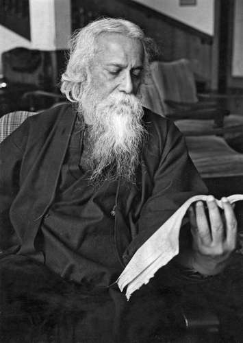
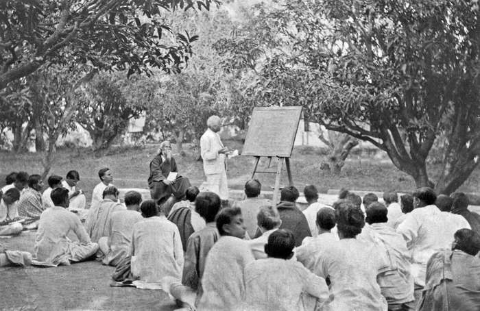
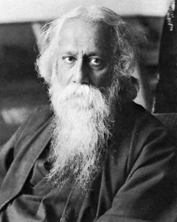

Rabindranath Tagore, Bengali Rabīndranāth Ṭhākur, (born May 7, 1861, Calcutta [now Kolkata], India—died August 7, 1941, Calcutta), Bengali poet, short-story writer, song composer, playwright, essayist, and painter who introduced new prose and verse forms and the use of colloquial language into Bengali literature, thereby freeing it from traditional models based on classical Sanskrit. He was highly influential in introducing Indian culture to the West and vice versa, and he is generally regarded as the outstanding creative artist of early 20th-century India. In 1913 he became the first non-European to receive the Nobel Prize for Literature.
The son of the religious reformer Debendranath Tagore, he early began to write verses, and, after incomplete studies in England in the late 1870s, he returned to India. There he published several books of poetry in the 1880s and completed Manasi (1890), a collection that marks the maturing of his genius. It contains some of his best-known poems, including many in verse forms new to Bengali, as well as some social and political satire that was critical of his fellow Bengalis. In 1891 Tagore went to East Bengal (now in Bangladesh) to manage his family’s estates at Shilaidah and Shazadpur for 10 years. There he often stayed in a houseboat on the Padma River (the main channel of the Ganges River), in close contact with village folk, and his sympathy for them became the keynote of much of his later writing. Most of his finest short stories, which examine “humble lives and their small miseries,” date from the 1890s and have a poignancy, laced with gentle irony, that is unique to him (though admirably captured by the director Satyajit Ray in later film adaptations). Tagore came to love the Bengali countryside, most of all the Padma River, an often-repeated image in his verse. During these years he published several poetry collections, notably Sonar Tari (1894; The Golden Boat), and plays, notably Chitrangada (1892; Chitra). Tagore’s poems are virtually untranslatable, as are his more than 2,000 songs, which achieved considerable popularity among all classes of Bengali society.
From 1912 Tagore spent long periods out of India, lecturing and reading from his work in Europe, the Americas, and East Asia and becoming an eloquent spokesperson for the cause of Indian independence. Tagore’s novels in Bengali are less well known than his poems and short stories; they include Gora (1910) and Ghare-Baire (1916), translated into English as Gora and The Home and the World, respectively. In the late 1920s, when he was in his 60s, Tagore took up painting and produced works that won him a place among India’s foremost contemporary artists.
